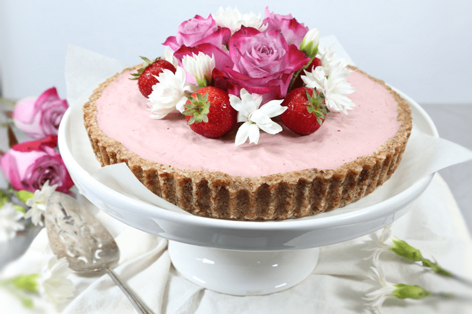

Strawberry Cream and Coconut Quinoa Tart
– raw, vegan, gluten-free –
When I first started to create this tart, I had no intention of adding in the quinoa layer. That idea sprung into my head once I had the crust all ready to go. But then that is how most of my creations go… I know it would sound more sophisticated if I were to say that I spent days or weeks writing up just one recipe but that just isn’t the case for me. I tend to build them as I go. Allowing my pantry or fridge to speak to me when I gaze upon its inventory.
Anyway, back to the quinoa layer… the most import bit of advice that I can give when using this ingredient is to rinse the heck out of it. Even if the bag that it came in states that it has been rinsed, rinse it again. Don’t skip this step no matter if you are going to sprout it or cook it, rinse it! If you don’t, you will inherit another flavor profile that won’t be all that welcomed.
I have to say that I really enjoyed all the different textures in this dessert. The top strawberry layer was creamy and smooth. The quinoa layer had a lightness to it, and of course, then there is the crust which was crunchy, yet chewy. Its sort of like a little party takes place in your mouth.
Another important fact that shouldn’t be ignored when making this tart is that you need a high-speed blender to create the creamy strawberry layer. Cashews are a little godsend when it comes to creating smooth, creamy textures in the raw food world but in the end, it’s the blender that brings on the magic! You won’t be able to achieve a grit-free filling in a food processor either. I have a Vitamix and Blendtec, which both work beautifully. If you are looking for some fun entertainment, check out these YouTube videos called, “Will it Blend.” I don’t recommend that you mimic anything that they do or test out your own experiments. Just watch and giggle.

09/13/18 Recipe Update
I made this dessert for a music jam session and it was an over-the-moon success! Nobody even asked what the bottom white quinoa layer was, they just gobbled it up. I first shared this recipe in 2013 so I updated the photos and added gram weight measurements for all my friends who like to use scales. I also reduce the amount of quinoa that is originally was called for. So I made a minor adjustment there.
I would like to point out that if you use a small tart pan (8″ or smaller), you will have left-overs of each layer. But trust me, this is almost welcomed. I was able to make 5 small dessert cups with just the strawberry layer. I popped them in the freezer for a quick dessert in the future. The quinoa layer had enough left over to make a bowl for the following day’s breakfast. This dessert freezes beautifully, just be sure to hold off on adding the fruit or flowers for decoration until you are ready to serve. Enjoy and let me know if you give this dessert a try.
 Ingredients:
Ingredients:
Crust:
- 2 cups (250 g) raw almonds, soaked & dehydrated
- 1/4 cup (50 g) shredded coconut
- 1/4 tsp (2 g) pink Himalayan sea salt
- 1 1/2 cups (330 g) Medjool dates, pitted
Coconut Quinoa: cooked
- 1/2 cup uncooked quinoa
- 1 cup water
- 1 cup (195 g) full-fat coconut milk (fresh or canned)
- 1/2 cup (50 g) shredded coconut
- 1/4 – 1/2 tsp liquid stevia
- 1/8 (1 g) tsp sea salt
Strawberry cream:
- 1/2 cup (95 g) almond milk
- 1/4 cup (65 g) lemon juice
- 1/4 cup (150 g) maple syrup
- 3 cups (425 g) diced strawberries
- 2 cups (300 g) cashews, soaked 2+ hours
- 1/4 tsp (2 g) pink Himalayan sea salt
- 1/2 cup (88 g) melted coconut oil
- 2 Tbsp (20 g) lecithin, ground
Strawberry Coulis – yields 1 cup
(optional for serving presentation)
- 2 cups (395 g) organic strawberries
- 1 Tbsp (25 g) maple syrup
- 2 tsp (8 g) chia seeds
Preparation:
Crust:
- Line the bottom of the tart pan with plastic wrap. This will make it easier to remove from the base. Set aside.
- Place the almonds in the food processor, fitted with the “S” blade.
- Pulse to break them down into small pieces.
- I already had soaked and dehydrated almonds on hand so I used those. You can just soak them and skip dehydrating if you want.
- Add the coconut and salt, pulse together.
- If you use a medium to large flaked coconut, you will want to process them down to a more powdery texture.
- Add the dates and process till the batter sticks together when pinched.
- Loosely place the batter around the base of the pan. Start by pressing the batter up along the edges first.
- Then evenly and firmly press the batter onto the base. Set aside.
Coconut quinoa:
- Cook or Sprout quinoa:
- Cook ~ Rinse quinoa till water runs clear. Combine water and quinoa in a medium-sized saucepan. Bring to a boil over high heat. Reduce heat to low; cover and simmer 15 minutes or until most of the liquid is absorbed. Turn off heat and let stand covered for 5 minutes.
- Sprout ~ to make 4 cups finished product, put 2 2/3 cup of quinoa in a jar. Add 2-3 times as much cool (60-70 degree) water. Mix quinoa up to assure even water contact for all. Soak for 20-30 minutes. Then drain off the soak water, rinse well and drain. Place a mesh lid on the jar and set it anywhere out of direct sunlight and at room temperature (70° is optimal). Rinse and drain again every 8-12 hours until tails are formed. Now it is ready to use.
- After cooking or sprouting, stir together half of the coconut milk, shredded coconut, stevia, and salt. The mixture should be thick. Add more coconut milk as needed, just make sure it doesn’t get soupy. Taste and see if more sweetener needs to be added.
- Spread roughly 1 1/4 cups of the coconut quinoa onto the bottom of the tart pan. The amount used will depend on the size of your tart pan. Set aside.
Strawberry cream:
-
Drain the soaked cashews and discard the soak water. Place in a high-speed blender.
- In a high-powered blender combine; almond milk, lemon juice, maple syrup, strawberries, cashews, and salt.
- Due to the volume and the creamy texture that we are going after, it is important to use a high-powered blender. It could be too taxing on a lower-end model.
-
Blend until the filling is creamy smooth. You shouldn’t detect any grit. If you do, keep blending.
-
This process can take 2-4 minutes, depending on the strength of the blender. Keep your hand cupped around the base of the blender carafe to feel for warmth. If the batter is getting too warm. Stop the machine and let it cool. Then proceed once cooled.
-
With a vortex going in the blender, drizzle in the coconut oil, and then add the lecithin. Blend just long enough to incorporate everything together. Don’t over-process. The batter will start to thicken.
-
What is a vortex? Look into the container from the top and slowly increase the speed from low to high, the batter will form a small vortex (or hole) in the center. High-powered machines have containers that are designed to create a controlled vortex, systematically folding ingredients back to the blades for smoother blends and faster processing… instead of just spinning ingredients around, hoping they find their way to the blades.
-
If your machine isn’t powerful enough or built to do this, you may need to stop the unit often to scrape the sides down.
-
Pour the batter into the pan, over the quinoa layer.
-
Gently tap the pan on the counter to remove any air bubbles.
-
Chill in the freezer for 4-6 hours or over-night and then in the fridge for 12 hours.
-
Store the cheesecake in the fridge for 3-5 days or up to 3 months in the freezer. Be sure that they are well sealed to avoid fridge odors.
Strawberry Coulis: optional for serving
- Place the strawberries, maple syrup, and chia seeds in the blender and blend until creamy.
- Pour into a squeeze bottle and allow it to sit for 15+ minutes. The chia will cause it to start to thicken.
- Drizzle over your dessert.
- Will keep for 3 days in the fridge.
© AmieSue.com